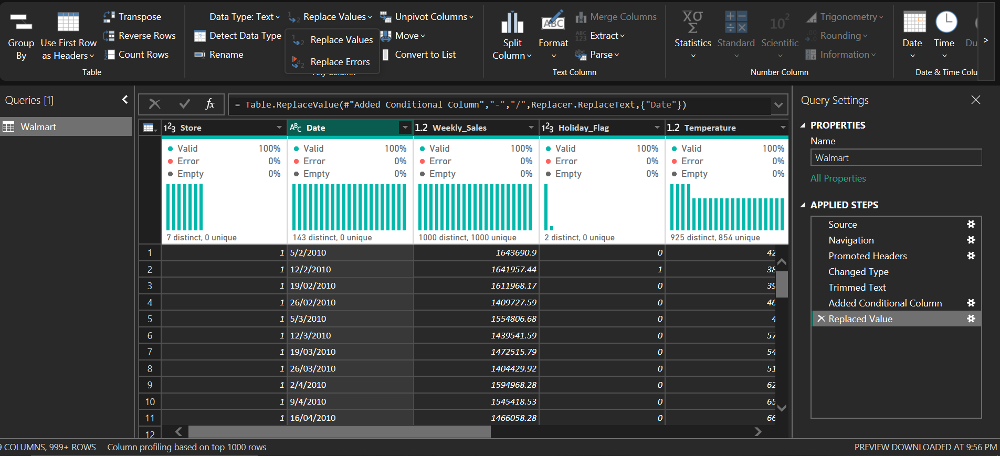
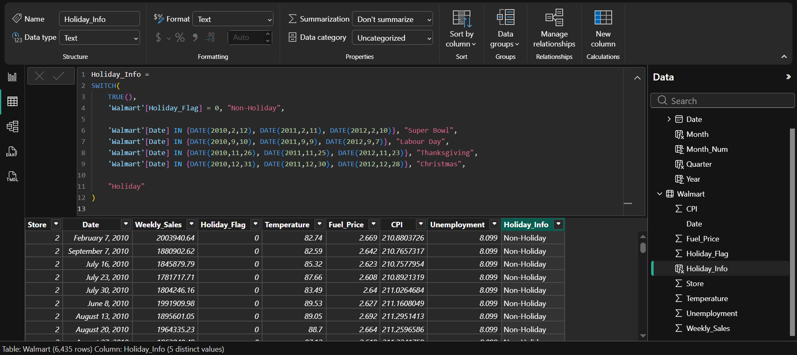
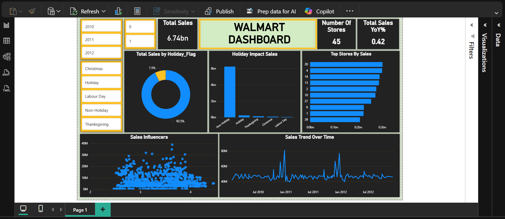

Walmart Dashboard: Analyzing Sales Forecasting
Goal
The Walmart Dashboard project aims to analyze historical Walmart store sales data from 2010–2012, identify key sales patterns, understand the impact of holidays and external factors (like weather, fuel price, CPI, and unemployment), and forecast future weekly sales to support better business decision-making.
Download from GitHub!Background Information
The dataset covers weekly sales for multiple Walmart stores from February 5, 2010 to November 1, 2012.
It contains the following fields:
- Store: Store number
- Date: Week of sales
- Weekly_Sales: Sales for that week
- Holiday_Flag: 1 = Holiday week, 0 = Non-holiday week
- Temperature: Temperature on the day of sale
- Fuel_Price: Fuel cost in the region
- CPI: Consumer Price Index
- Unemployment: Unemployment rate
Special holiday events in the dataset:
- Super Bowl
- Labour Day
- Thanksgiving
- Christmas
Setup
The first step in the project involved data cleaning to ensure accurate analysis. This included trimming text columns to avoid potential biases in the dataset. To facilitate better visualization of the data, I added a conditional column for clarity on the holiday label. Furthermore, I verified that there was no missing data and that each field had the correct data type using Power BI's query tool.
Fig 1. This image shows the dataset after it was transformed.
These steps were essential to ensure that the data was properly formatted for analysis and would yield accurate results.
The second step in the project involved loading the data for further analysis. This also included using measures for conditional column, and calculated table for the dimension date.
Fig 2. This image shows the dataset after it was loaded.
These steps were essential to prepare the data for visualization and dashboard interactions.
Dashboard Design and Creation.
With the cleaned and transformed Walmart sales dataset, I developed an interactive retail analytics dashboard that highlights key performance insights across stores and product categories. The dashboard includes visualizations showing sales trends by store, department, holiday events, and seasonal patterns, giving a clear picture of factors influencing revenue. These visual insights provide a comprehensive understanding of sales behavior across different time periods and store locations, enabling data-driven decision-making for inventory planning, promotions, and demand forecasting.
Fig 3. This image shows the HR Analytics Dashboard.
In addition to creating the key visuals for the Walmart sales dashboard, I also added several slicers to make the report more interactive and user-driven. These slicers allow users to filter the data by store, department, year, month, and holiday periods. This added level of interactivity helps users explore specific segments of the data, compare performance across time periods or locations, and uncover deeper insights that would not be visible from static charts alone.
Conclusion
- Walmart sales show seasonal patterns and holiday spikes, with notable increases during major holidays like Thanksgiving and Christmas.
- Top-performing stores consistently contribute the most to total sales, while weaker stores may need targeted attention.
- External factors such as fuel price, temperature, CPI, and unemployment have measurable but varying impacts on sales.
- The forecasted sales provide insight for inventory planning, staffing, and promotional strategies.
This dashboard enables Walmart management to make data-driven decisions, optimize store performance, and plan for high-demand periods.